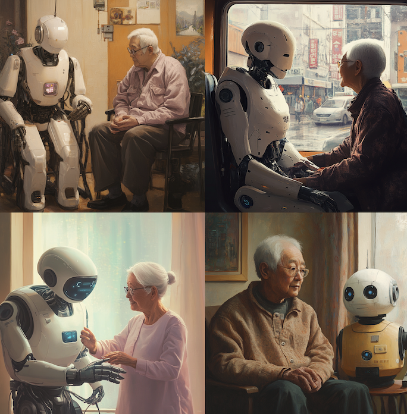
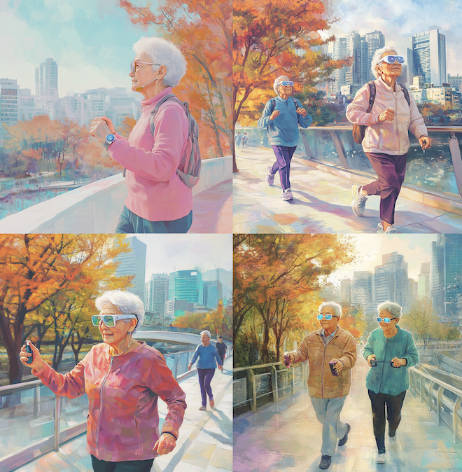
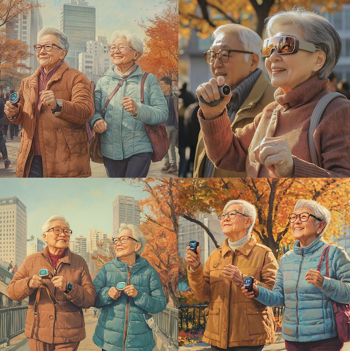
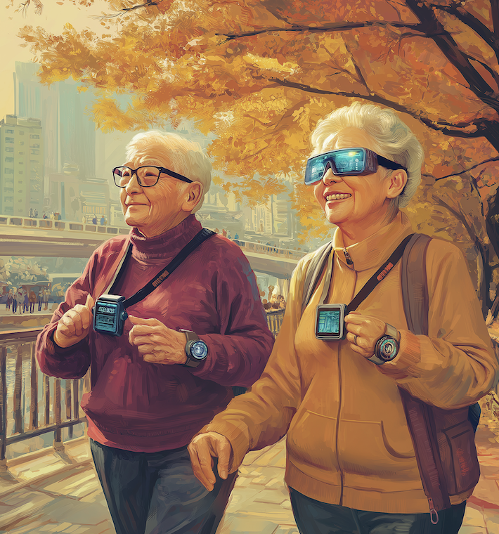

ai w05
미드저니를 통해 원하는 이미지 생성하기 3 & 스타일만들기
이번주는 미드저니를 통해 올림픽 관련 이미지를 만들어 보기로 했다. 아래는 그 과정 중 일부 이미지이다.

가장 맨 처음 프롬프트를 입력한 상태의 결과물이다. 로봇과 사람의 모습이 너무 전형적인 느낌이 나고 정적인 느낌이 들어 프롬프트를 대폭 수정했다.

산책, 천 등을 프롬프트에 추가 입력했다. 구도는 마음에 들었으나 전체적인 색감이 아쉬웠으므로 variation+ remix를 진행하기로 했다.

마음에 드는 색감이 되었으나 헬스케어 기기를 활용하는 모습이 굉장히 미묘하다. 기계 사용 관련된 프롬프트를 다시 수정했다.

최종 완성본. 활기차면서도 부드러운 이미지지만 자연스럽게 미래적인 분위기를 풍긴 결과물이 완성되었다.
- © yanghyeji
- Design: HTML5 UP